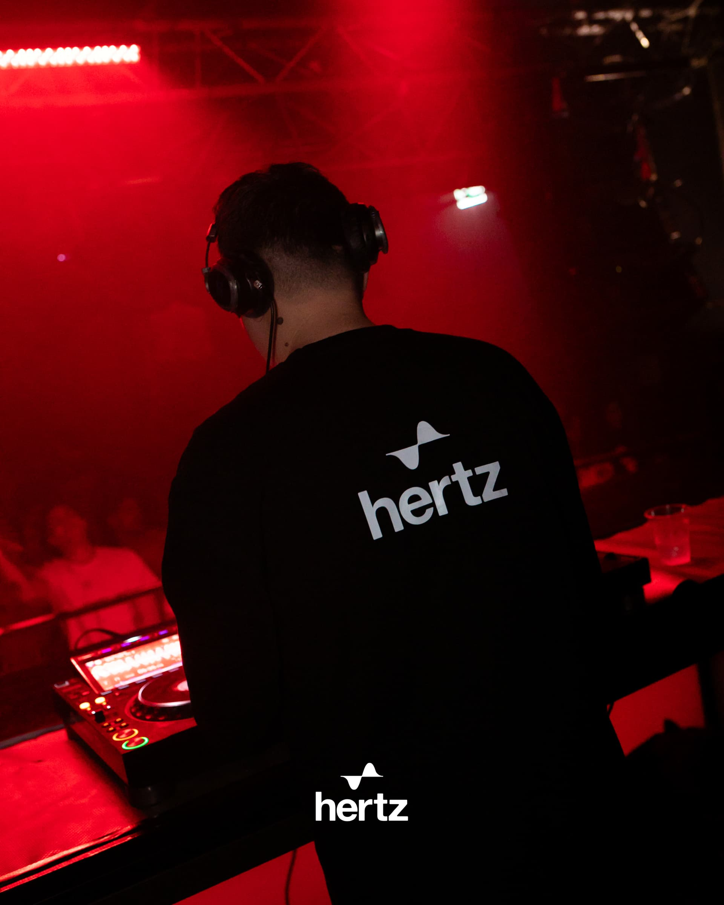
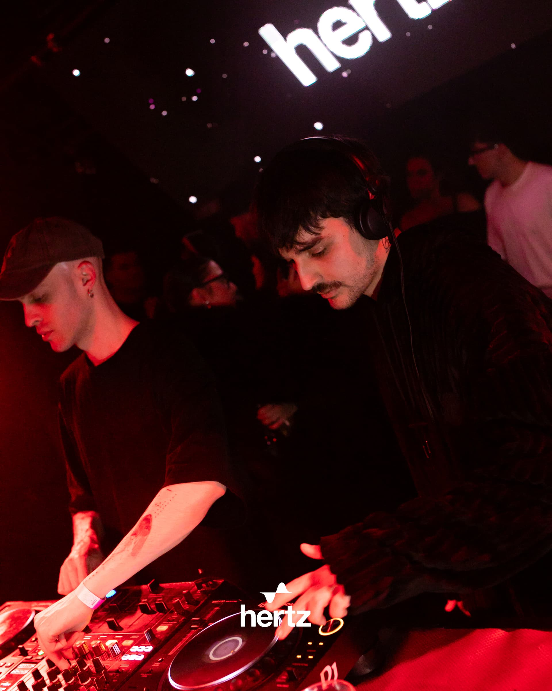

<!DOCTYPE html>
<html lang="en">
<head>
  <meta charset="UTF-8">
  <meta name="viewport" content="width=device-width, initial-scale=1.0">
  <title>Hertz Media, Editorial, Archive & Club Culture</title>
  <meta name="description" content="Hertz editorial, photo archive and club culture writing. Articles on minimal and deep-tech, reportage from Bologna, technical analysis.">
  <meta name="theme-color" content="#08080d">
  <meta property="og:type" content="website">
  <meta property="og:title" content="Hertz Media, Editorial, Archive & Club Culture">
  <meta property="og:description" content="Editorial, photo archive and club culture writing from Hertz Bologna.">
  <meta property="og:image" content="https://hertz.club/assets/hertz-logo-official.png">
  <meta property="og:url" content="https://hertz.club/media">
  <meta name="twitter:card" content="summary_large_image">
  <meta name="twitter:title" content="Hertz Media">
  <meta name="twitter:description" content="Editorial, photo archive and club culture writing from Hertz Bologna.">
  <link rel="canonical" href="https://hertz.club/media">
  <link rel="stylesheet" href="fonts.css">
  <link href="https://fonts.googleapis.com/css2?family=JetBrains+Mono:wght@400;500;600;700&display=block" rel="stylesheet">
  <style>
    * { margin: 0; padding: 0; box-sizing: border-box; }
    html { -webkit-font-smoothing: antialiased; scroll-behavior: smooth; }
    body { background: #08080d; color: #f5f5f3; font-family: 'HelveticaNeue', 'Helvetica Neue', Helvetica, Arial, sans-serif; overflow-x: hidden; }
    ::-webkit-scrollbar { width: 4px; }
    ::-webkit-scrollbar-track { background: #08080d; }
    ::-webkit-scrollbar-thumb { background: rgba(20,72,137,0.4); }
    ::-webkit-scrollbar-thumb:hover { background: rgba(20,72,137,0.7); }
    ::selection { background: rgba(0,212,255,0.25); color: #f5f5f3; }
    img { user-select: none; -webkit-user-drag: none; max-width: 100%; height: auto; }
    a { color: inherit; text-decoration: none; }
    @media (max-width: 768px) {
      * { -webkit-tap-highlight-color: transparent; }
      html { font-size: 14px; }
      body { font-size: 14px; }
    }
    @media (max-width: 480px) { html { font-size: 13px; } }
    @media (prefers-reduced-motion: reduce) {
      * { animation-duration: 0.01ms !important; animation-iteration-count: 1 !important; transition-duration: 0.01ms !important; }
    }
  </style>
</head>
<body>
<div id="root"></div>
<script src="https://unpkg.com/react@18.3.1/umd/react.production.min.js" crossorigin="anonymous"></script>
<script src="https://unpkg.com/react-dom@18.3.1/umd/react-dom.production.min.js" crossorigin="anonymous"></script>
<script src="https://unpkg.com/@babel/standalone@7.29.0/babel.min.js" integrity="sha384-m08KidiNqLdpJqLq95G/LEi8Qvjl/xUYll3QILypMoQ65QorJ9Lvtp2RXYGBFj1y" crossorigin="anonymous"></script>
<script type="text/babel" src="hertz-shared.jsx"></script>
<script type="text/babel" src="hertz-editorial-components.jsx"></script>
<script type="text/babel">

const ARTICLES = [
  {
    slug: "two-speed-island-ibiza-2026",
    title: "The Two-Speed Island: What Ibiza 2026 Is Actually Telling Us",
    subtitle: "A €70 million hyperclub topped the world poll in year one. Read the rest of the calendar and the split becomes impossible to miss.",
    excerpt: "UNVRS didn't just open big — it rewrote the rules in a single season. We read the 2026 Ibiza calendar as two scenes running on the same island at different speeds, and ask what that leaves for everyone who isn't building an arena.",
    image: "assets/art-trends.jpg",
    rubric: "SIGNAL",
    metadata: { author: 'Hertz Redazione', category: "Editorial", rubric: "SIGNAL", tags: ["ibiza", "unvrs", "hyperclub", "tech-house", "scene", "2026"], publishedAt: "2026-06-26" },
    content: { readingTimeMinutes: 6 },
  },
  {
    slug: "sunwaves-left-home-rominimal",
    title: "Sunwaves Left Home: The Format That Refuses to Scale",
    subtitle: "After 18 years on the Black Sea, the cathedral of the marathon set was pushed out of Romania. What that says about the music we care about most.",
    excerpt: "Sunwaves — no VIP, booth close, six-hour sets — just lost its home to permits and pressure and decamped to Spain. We look at why the most music-first format in our world is also the most structurally fragile, and what it means to keep it alive in a city like ours.",
    image: "assets/floor-5.jpg",
    rubric: "DISPATCH",
    metadata: { author: 'Hertz Redazione', category: "Reportage", rubric: "DISPATCH", tags: ["sunwaves", "rominimal", "minimal", "romania", "marathon-set", "scene"], publishedAt: "2026-06-21" },
    content: { readingTimeMinutes: 6 },
  },
  {
    slug: "music-on-pacha-long-residency",
    title: "Music On at Pacha: The Case for the Long Residency",
    subtitle: "Eight years on the same Friday, despite every rumour of a move. In an age of one-off spectacles, that's not nostalgia — it's a different technology.",
    excerpt: "Music On stayed at Pacha for 2026. We make the case that the long residency builds something a festival headline slot never can — a crowd, a sound, a room — and ask what it teaches anyone running their own night.",
    image: "assets/floor-2.jpg",
    rubric: "RESIDENT",
    metadata: { author: 'Hertz Redazione', category: "Reportage", rubric: "RESIDENT", tags: ["music-on", "marco-carola", "pacha", "residency", "ibiza", "tech-house"], publishedAt: "2026-06-16" },
    content: { readingTimeMinutes: 6 },
  },
  {
    slug: "radar-vol-1-eight-names",
    title: "Radar Vol. 1: Eight Names Moving the Groove Right Now",
    subtitle: "Not the most-streamed. The ones whose records keep ending up in our sets — across deep-tech, Latin tech, and the line where they cross.",
    excerpt: "Our first artist column. Eight producers we're actually playing, from UK deep-tech and the Italian groove to Peru and the festival crossover — with the releases, the labels, and an honest read on where each one sits.",
    image: "assets/art-warmup.jpg",
    rubric: "RADAR",
    metadata: { author: 'Hertz Redazione', category: "Trends", rubric: "RADAR", tags: ["radar", "emerging-artists", "tech-house", "deep-tech", "minimal", "new-music"], publishedAt: "2026-06-11" },
    content: { readingTimeMinutes: 7 },
  },
  {
    slug: "two-people-one-booth-b2b",
    title: "Two People, One Booth: What the B2B Reveals About the Split",
    subtitle: "Everything Always and RPR Soundsystem are both \"two artists, back to back.\" They are not the same thing, and the difference is the whole argument.",
    excerpt: "The b2b has become the scene's basic unit. We pull apart two models — the American mainstage supergroup and the European b2b-as-conversation — and what each one says about where clubbing is going.",
    image: "assets/man-room.jpg",
    rubric: "CROSSFADE",
    metadata: { author: 'Hertz Redazione', category: "Editorial", rubric: "CROSSFADE", tags: ["b2b", "collaboration", "everything-always", "rpr-soundsystem", "tech-house", "scene"], publishedAt: "2026-06-06" },
    content: { readingTimeMinutes: 6 },
  },
  {
    slug: 'physics-deep-tech-128bpm',
    title: "128 BPM: What the Number Means and Why It Isn't Arbitrary",
    subtitle: "The physics and physiology behind deep tech's most persistent convention.",
    excerpt: "128 beats per minute. If you've spent time in European clubs over the last fifteen years, this number has passed through your body more times than you've consciously noticed. It looks like convention. It isn't.",
    image: 'assets/art-bpm.jpg',
    rubric: null,
    metadata: { author: 'Hertz Redazione', category: 'Technical', rubric: null, tags: ["technical","sound-design","128bpm","deep-tech","production","perlon"], publishedAt: '2026-05-20' },
    content: { readingTimeMinutes: 7 },
  }
];

const RUBRICS = [
  { key: 'ALL',       label: 'All',       desc: 'The full editorial: five recurring columns reading one split scene.' },
  { key: 'SIGNAL',    label: 'Signal',    desc: 'The macro read: where the scene is structurally going.' },
  { key: 'RADAR',     label: 'Radar',     desc: 'Emerging artists we actually play.' },
  { key: 'RESIDENT',  label: 'Resident',  desc: 'The labels and residencies that built the sound.' },
  { key: 'CROSSFADE', label: 'Crossfade', desc: 'The collabs, the b2bs, the aliases, the label moves.' },
  { key: 'DISPATCH',  label: 'Dispatch',  desc: 'Field reportage, from the floor, not the press list.' },
];
const ALL_TAGS = Array.from(new Set(ARTICLES.flatMap(a => (a.metadata.tags || [])))).sort();

const GALLERY = [
  { src: 'uploads/27.02_Hertz-3.jpg',   label: 'HZ.022, 27.02', tall: false },
  { src: 'uploads/27.02_Hertz-4.jpg',   label: 'HZ.022, 27.02', tall: true  },
  { src: 'uploads/27.02_Hertz-5.jpg',   label: 'HZ.022, 27.02', tall: false },
  { src: 'uploads/27.02_Hertz-6.jpg',   label: 'HZ.022, 27.02', tall: false },
  { src: 'uploads/27.02_Hertz-7.jpg',   label: 'HZ.022, 27.02', tall: true  },
  { src: 'uploads/27.02_Hertz-8.jpg',   label: 'HZ.022, 27.02', tall: false },
  { src: 'uploads/27.02_Hertz-9.jpg',   label: 'HZ.022, 27.02', tall: false },
  { src: 'uploads/27.02_Hertz-10.jpg',  label: 'HZ.022, 27.02', tall: false },
  { src: 'uploads/27.02_Hertz-11.jpg',  label: 'HZ.022, 27.02', tall: true  },
  { src: 'uploads/27.02_Hertz-12.jpg',  label: 'HZ.022, 27.02', tall: false },
  { src: 'uploads/27.02_Hertz-13.jpg',  label: 'HZ.022, 27.02', tall: false },
  { src: 'uploads/27.02_Hertz-14.jpg',  label: 'HZ.022, 27.02', tall: false },
  { src: 'uploads/27.02_Hertz-15.jpg',  label: 'HZ.022, 27.02', tall: true  },
  { src: 'uploads/27.02_Hertz-16.jpg',  label: 'HZ.022, 27.02', tall: false },
  { src: 'uploads/27.02_Hertz-36.jpg',  label: 'HZ.022, 27.02', tall: false },
  { src: 'uploads/27.02_Hertz-76.jpg',  label: 'HZ.022, 27.02', tall: false },
  { src: 'uploads/27.02_Hertz-142.jpg', label: 'HZ.022, 27.02', tall: true  },
  { src: 'uploads/27.02_Hertz-167.jpg', label: 'HZ.022, 27.02', tall: false },
  { src: 'uploads/27.02_Hertz-168.jpg', label: 'HZ.022, 27.02', tall: false },
  { src: 'uploads/27.02_Hertz-173.jpg', label: 'HZ.022, 27.02', tall: false },
  { src: 'uploads/27.02_Hertz-174.jpg', label: 'HZ.022, 27.02', tall: true  },
  { src: 'uploads/27.02_Hertz-176.jpg', label: 'HZ.022, 27.02', tall: false },
  { src: 'uploads/27.02_Hertz-197.jpg', label: 'HZ.022, 27.02', tall: false },
];

function MediaPage() {
  const C = window.Cv8;
  const R = window.R8;
  const mono = { fontFamily: "'JetBrains Mono', monospace" };
  const briq = { fontFamily: "'HelveticaNeue', 'Helvetica Neue', Helvetica, sans-serif" };
  const param = (k) => { try { return new URLSearchParams(window.location.search).get(k); } catch (e) { return null; } };
  const [rubric, setRubric] = React.useState('ALL');
  const [query, setQuery] = React.useState(() => param('q') || '');
  const [tag, setTag] = React.useState(() => param('tag'));
  const [galleryFilter, setGalleryFilter] = React.useState('ALL');
  const GALLERY_EVENTS = ['ALL', 'HZ.022'];

  const q = query.trim().toLowerCase();
  const filtered = ARTICLES.filter(a => {
    if (rubric !== 'ALL' && String(a.metadata.rubric || '').toUpperCase() !== rubric) return false;
    if (tag && !(a.metadata.tags || []).includes(tag)) return false;
    if (q) {
      const hay = [a.title, a.subtitle, a.excerpt, (a.metadata.tags || []).join(' '), a.metadata.category, a.metadata.rubric || '']
        .join(' ').toLowerCase();
      if (!hay.includes(q)) return false;
    }
    return true;
  });

  const featured = filtered[0] || null;
  const secondary = filtered.slice(1);
  const activeRubric = RUBRICS.find(r => r.key === rubric) || RUBRICS[0];

  return (
    <div style={{ background: C.dark, minHeight: '100vh' }}>
      <window.Nav8 />
      <window.PageHero section="// 04 / MEDIA" title="The editorial." sub="Articles · Interviews · Photo archive · Bologna 2023–" />

      {/* ARTICLES SECTION */}
      <section style={{
        background: C.light,
        padding: 'clamp(60px,10vh,120px) clamp(20px,4vw,56px)',
      }}>
        <div style={{ maxWidth: 1400, margin: '0 auto' }}>

          {/* Editorial system intro */}
          <R>
            <div style={{ marginBottom: 'clamp(26px,3vw,38px)', maxWidth: 720 }}>
              <div style={{ ...mono, fontSize: 10, letterSpacing: '0.22em', color: C.blue, marginBottom: 14 }}>// THE EDITORIAL SYSTEM</div>
              <p style={{ ...briq, fontSize: 'clamp(16px,1.5vw,20px)', lineHeight: 1.5, color: C.dark + 'cc', letterSpacing: '-0.01em', textWrap: 'pretty' }}>
                One scene splitting into two: clubbing as spectacle, clubbing as ecosystem. Five recurring columns, each a different angle on that split.
              </p>
            </div>
          </R>

          {/* Controls: rubric tabs + search */}
          <R>
            <div style={{ display: 'flex', flexWrap: 'wrap', alignItems: 'center', justifyContent: 'space-between', gap: 12, borderBottom: `1px solid ${C.dark}14`, marginBottom: 14 }}>
              <div style={{ display: 'flex', flexWrap: 'wrap', gap: 0, marginBottom: -1 }}>
                {RUBRICS.map(r => (
                  <button key={r.key} onClick={() => setRubric(r.key)} style={{
                    padding: '12px 16px', background: 'transparent', border: 'none', outline: 'none', minHeight: 44,
                    borderBottom: rubric === r.key ? `2px solid ${C.blue}` : '2px solid transparent',
                    ...mono, fontSize: 11, letterSpacing: '0.18em', textTransform: 'uppercase',
                    color: rubric === r.key ? C.blue : C.dark + '66', cursor: 'pointer', transition: 'color 0.2s', whiteSpace: 'nowrap', marginBottom: -1,
                  }}>{r.label}</button>
                ))}
              </div>
              <div style={{ display: 'flex', alignItems: 'center', flex: '0 1 280px', minWidth: 190, paddingBottom: 6 }}>
                <span style={{ ...mono, fontSize: 13, color: C.dark + '55', marginRight: 8 }}>⌕</span>
                <input
                  value={query} onChange={e => setQuery(e.target.value)}
                  placeholder="SEARCH ARTICLES" aria-label="Search articles"
                  style={{
                    flex: 1, background: 'transparent', border: 'none', outline: 'none',
                    ...mono, fontSize: 11, letterSpacing: '0.12em', color: C.dark,
                    borderBottom: `1px solid ${C.dark}22`, padding: '8px 0',
                  }}
                />
                {query && (
                  <button onClick={() => setQuery('')} aria-label="Clear search" style={{ ...mono, fontSize: 12, color: C.dark + '66', background: 'transparent', border: 'none', cursor: 'pointer', padding: '0 4px' }}>✕</button>
                )}
              </div>
            </div>
          </R>

          {/* Active rubric remit */}
          <R>
            <div style={{ ...mono, fontSize: 11, letterSpacing: '0.03em', color: C.dark + '77', marginBottom: 22 }}>
              {activeRubric.desc}
            </div>
          </R>

          {/* Topic chips */}
          <R>
            <div style={{ display: 'flex', flexWrap: 'wrap', gap: 8, marginBottom: 'clamp(36px,4vw,52px)' }}>
              {ALL_TAGS.map(t => (
                <button key={t} onClick={() => setTag(tag === t ? null : t)} style={{
                  ...mono, fontSize: 10, letterSpacing: '0.06em',
                  padding: '6px 11px', cursor: 'pointer', transition: 'all 0.2s',
                  border: `1px solid ${tag === t ? C.blue : C.dark + '1e'}`,
                  background: tag === t ? C.blue : 'transparent',
                  color: tag === t ? C.light : C.dark + '88',
                }}>#{t}</button>
              ))}
              {tag && (
                <button onClick={() => setTag(null)} style={{ ...mono, fontSize: 10, letterSpacing: '0.12em', textTransform: 'uppercase', padding: '6px 10px', cursor: 'pointer', border: 'none', background: 'transparent', color: C.dark + '66' }}>clear ✕</button>
              )}
            </div>
          </R>

          {filtered.length === 0 ? (
            <div style={{ ...mono, fontSize: 11, color: C.dark + '44', letterSpacing: '0.14em', padding: '40px 0' }}>
              Nothing matches. Try another column, topic, or search.
            </div>
          ) : (
            <div>
              {/* LEAD */}
              {featured && (
                <R style={{ marginBottom: 'clamp(40px,5vw,72px)', paddingBottom: 'clamp(40px,5vw,72px)', borderBottom: `1px solid ${C.dark}14` }}>
                  <window.ArticleCard article={featured} featured={true} />
                </R>
              )}
              {/* SECONDARY GRID */}
              {secondary.length > 0 && (
                <div style={{
                  display: 'grid',
                  gridTemplateColumns: 'repeat(auto-fill, minmax(260px, 1fr))',
                  gap: 'clamp(32px,3.2vw,56px)',
                }}>
                  {secondary.map((article, i) => (
                    <R key={article.slug} delay={(i % 3) * 0.06}>
                      <window.ArticleCard article={article} />
                    </R>
                  ))}
                </div>
              )}
            </div>
          )}
        </div>
      </section>

      {/* GALLERY FILTER */}
      <div style={{ background: C.darkSoft, padding: '0 clamp(20px,4vw,56px)', borderBottom: `1px solid ${C.light}0a` }}>
        <div style={{ display: 'flex', gap: 0, overflowX: 'auto' }}>
          {GALLERY_EVENTS.map(ev => (
            <button key={ev} onClick={() => setGalleryFilter(ev)} style={{
              padding: '16px 24px', background: 'transparent',
              border: 'none', outline: 'none', borderBottom: galleryFilter === ev ? `2px solid ${C.blue}` : '2px solid transparent',
              ...mono, fontSize: 11, letterSpacing: '0.16em', textTransform: 'uppercase',
              color: galleryFilter === ev ? C.blue : C.light + '44', cursor: 'pointer',
              transition: 'color 0.2s', whiteSpace: 'nowrap',
            }}>{ev}</button>
          ))}
        </div>
      </div>

      {/* Gallery grid */}
      <section style={{ padding: 'clamp(32px,4vh,56px) clamp(20px,4vw,56px)' }}>
        <div style={{
          columns: 'clamp(240px, 28vw, 380px)',
          columnGap: 4,
          maxWidth: 1400, margin: '0 auto',
        }}>
          {(galleryFilter === 'ALL' ? GALLERY : GALLERY.filter(img => img.label.includes(galleryFilter))).map((img, i) => (
            <div key={i} style={{
              breakInside: 'avoid', marginBottom: 4,
              position: 'relative', overflow: 'hidden',
              cursor: 'pointer',
            }}
            onMouseEnter={e => { e.currentTarget.querySelector('img').style.filter = 'saturate(0.8) brightness(0.75) contrast(1.05)'; e.currentTarget.querySelector('.label').style.opacity = '1'; }}
            onMouseLeave={e => { e.currentTarget.querySelector('img').style.filter = 'saturate(0.45) brightness(0.65) contrast(1.15)'; e.currentTarget.querySelector('.label').style.opacity = '0'; }}
            >
              
              <div className="label" style={{
                position: 'absolute', bottom: 10, left: 10,
                ...mono, fontSize: 9, letterSpacing: '0.16em', color: C.light + 'cc',
                opacity: 0, transition: 'opacity 0.3s',
                background: 'rgba(8,8,13,0.7)', padding: '3px 8px',
              }}>{img.label}</div>
            </div>
          ))}
        </div>
      </section>

      {/* Press kit */}
      <section style={{ background: C.light, padding: 'clamp(48px,6vh,80px) clamp(20px,4vw,56px)' }}>
        <R>
          <div style={{ maxWidth: 1200, margin: '0 auto', display: 'grid', gridTemplateColumns: 'repeat(auto-fit, minmax(280px, 1fr))', gap: 48, alignItems: 'center' }}>
            <div>
              <div style={{ ...mono, fontSize: 11, letterSpacing: '0.2em', color: C.blue, marginBottom: 12 }}>// PRESS</div>
              <h2 style={{ ...briq, fontSize: 'clamp(2rem,5vw,4rem)', fontWeight: 700, lineHeight: 0.83, letterSpacing: '-0.04em', color: C.dark, marginBottom: 20 }}>
                Press kit<span style={{ color: C.blue }}>.</span>
              </h2>
              <p style={{ fontSize: 14, color: C.dark + '88', lineHeight: 1.75, marginBottom: 28, maxWidth: 420, textWrap: 'pretty' }}>
                Logos, high-res photos, press release and bio available for press and booking inquiries.
              </p>
              <a href="mailto:info@hertz.cc" aria-label="Request press kit by email" style={{
                display: 'inline-block', border: `1px solid ${C.dark}33`,
                padding: '12px 24px',
                ...mono, fontSize: 12, letterSpacing: '0.14em', color: C.dark,
                textTransform: 'uppercase', transition: 'all 0.2s',
              }}
              onMouseEnter={e => { e.currentTarget.style.borderColor = C.blue; e.currentTarget.style.color = C.blue; }}
              onMouseLeave={e => { e.currentTarget.style.borderColor = C.dark + '33'; e.currentTarget.style.color = C.dark; }}
              >Request press kit →</a>
            </div>
            <div style={{ display: 'grid', gridTemplateColumns: '1fr 1fr', gap: 2 }}>
              
              
            </div>
          </div>
        </R>
      </section>

      <window.Footer8 bannerLight={false} />
    </div>
  );
}

ReactDOM.createRoot(document.getElementById('root')).render(<MediaPage />);
</script>
</body>
</html>
